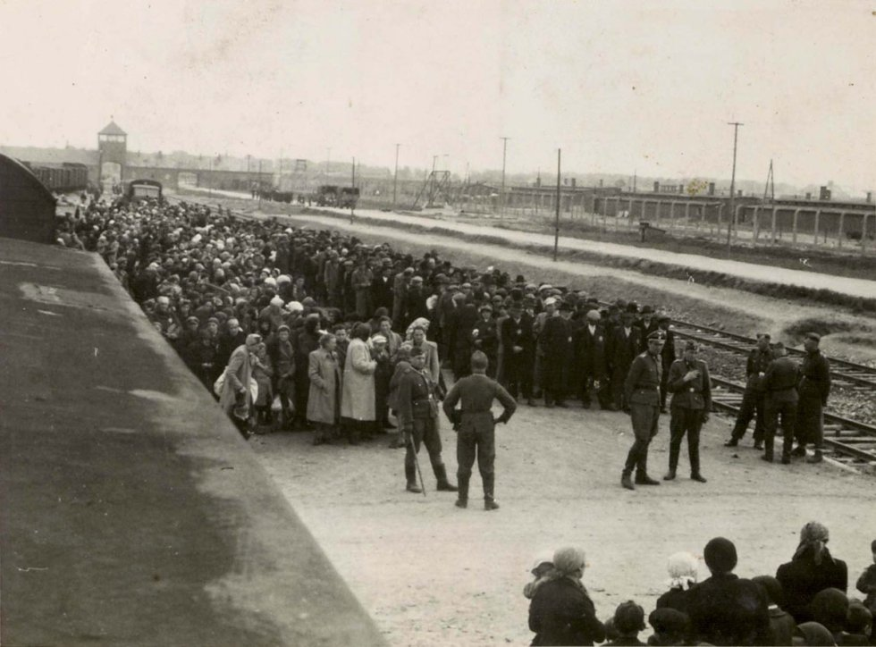
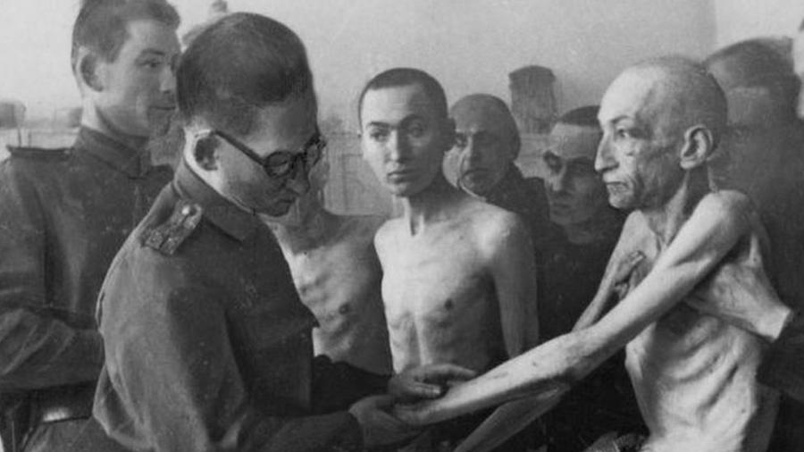
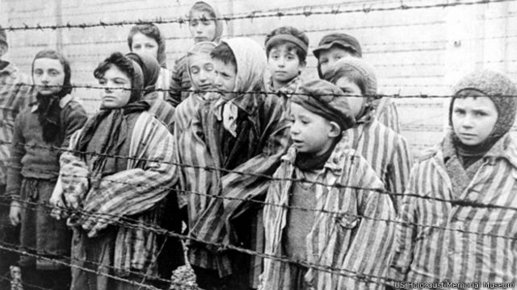

A Ideologia Nazista da Raça Ariana e a Perseguição Implacável aos grupos perseguidos, encabeçada por Adolf Hitler e seu partido durante a década de 1930 e 1940, tinha como pilar central a crença na supremacia da chamada "raça ariana". Esta ideia, forjada em uma mistura tóxica de pseudo-ciência, nacionalismo extremo e preconceitos de longa data, levou a uma das mais terríveis e sistemáticas campanhas de genocídio na história humana. As raízes da ideia da raça ariana podem ser traçadas a teorias raciais e antropológicas do século XIX, quando alguns estudiosos, baseados em pesquisas linguísticas e arqueológicas, propuseram a existência de uma antiga "raça" indo-europeia que teria se espalhado pela Europa e Ásia. No entanto, foi no contexto do crescimento do nacionalismo e do racismo científico na Europa que essa noção evoluiu para a crença em uma raça "ariana" superior. Os nazistas adotaram e distorceram esta teoria, promovendo a ideia de que os arianos não eram apenas uma raça antiga, mas a raça mais pura e superior de todas. Eles identificaram os germânicos, especialmente os alemães, como os descendentes diretos deste grupo e, portanto, os herdeiros legítimos de seu suposto legado de grandeza. A crença na supremacia ariana não era meramente teórica. Ela era a justificativa para uma série de políticas e práticas draconianas que buscavam purificar a sociedade alemã. Os nazistas implementaram rigorosas leis de pureza racial, como as Leis de Nuremberg de 1935, que proibiam casamentos e relações sexuais entre judeus e não judeus. Mas a crueldade não parou na legislação. O regime nazista lançou uma campanha sistemática de eutanásia contra pessoas com deficiência, as quais eram vistas como manchas na pureza racial. Simultaneamente, iniciou-se uma campanha de esterilização forçada contra grupos considerados racialmente inferiores. O antissemitismo, já profundamente enraizado na Europa, foi elevado a novos níveis de virulência sob o regime nazista. Os judeus eram retratados como a antítese da raça ariana, conspiradores mundiais que buscavam minar a grandeza alemã. Esta demonização culminou no Holocausto, onde seis milhões de judeus foram exterminados em campos de concentração e extermínio. Além dos judeus, outros grupos também foram perseguidos e exterminados pelos nazistas devido à sua ideologia racial, incluindo ciganos, eslavos, comunistas, homossexuais e muitos outros. A ideia nazista da raça ariana, longe de ser uma mera crença, foi uma força motriz por trás de algumas das maiores atrocidades do século XX. Ela serve como um lembrete sombrio do perigo do racismo e da pseudo-ciência, e da necessidade constante de vigilância contra ideologias que desumanizam e discriminam com base em origens ou identidades.
Os campos de concentração nazistas, implantados durante a Segunda Guerra Mundial, foram locais de imensa crueldade, sofrimento e morte. Os prisioneiros desses campos enfrentaram condições desumanas que deixaram marcas profundas, tanto físicas quanto psicológicas, que perduraram por toda a vida. Os traumas psicológicos enfrentados pelos sobreviventes do Holocausto são profundos e multifacetados. Muitos sobreviventes experimentaram síndrome do estresse pós-traumático, depressão, ansiedade e pesadelos. O trauma não afetou apenas a primeira geração de sobreviventes, mas também passou para as gerações subsequentes, conhecido como trauma transmitido. Para muitos, falar sobre suas experiências foi impossível por décadas. Outros encontraram na narrativa uma forma de cura e educação para as gerações futuras. Os horrores diários nos campos deixaram cicatrizes psicológicas profundas. Muitos sobreviventes sofriam de síndrome de estresse pós-traumático (TEPT), que se manifestava em pesadelos, flashbacks e uma sensação constante de medo. A desumanização era uma estratégia deliberada dos nazistas, e como resultado, muitos prisioneiros lutavam com sentimentos de vergonha, culpa e baixa autoestima. A desconfiança era outra consequência comum. Depois de testemunhar traições, mesmo entre amigos e familiares, em situações extremas, muitos sobreviventes acharam difícil confiar nos outros depois da guerra. Relacionamentos e laços familiares foram frequentemente afetados, com sobreviventes se sentindo alienados de seus entes queridos e da sociedade em geral. Mesmo depois de serem libertados, os traumas vividos nos campos continuaram a afetar os sobreviventes. Muitos tiveram dificuldades em se readaptar à sociedade e enfrentaram discriminação e estigma. Problemas de saúde, resultantes da má nutrição e tortura, persistiram, reduzindo a expectativa de vida de muitos. Além disso, a perda de familiares e a destruição de suas comunidades significavam que muitos enfrentavam o pós-guerra sozinhos, sem uma rede de apoio. Em resumo, os campos de concentração nazistas representaram uma das maiores atrocidades da história moderna. As cicatrizes deixadas por essa experiência, tanto físicas quanto psicológicas, são testemunhos da resiliência humana diante da adversidade extrema e do espírito indomável de sobreviver contra todas as probabilidades.
Os campos de concentração nazistas são, sem dúvida, um dos símbolos mais sombrios e terríveis da história humana. Criados para perseguir, torturar e exterminar grupos considerados "indesejáveis" pelo regime nazista, esses campos revelam a profundidade da crueldade e desumanização possíveis quando uma ideologia de ódio é posta em prática. O primeiro contato que muitos prisioneiros tinham com os campos era aterrador. Frequentemente transportados em vagões de carga superlotados, sem comida, água ou instalações sanitárias, eles chegavam exaustos, desorientados e aterrorizados. Ao desembarcar, eram imediatamente submetidos a uma "seleção", um processo brutal onde os nazistas decidiam quem estava apto para trabalhar e quem seria enviado diretamente para as câmaras de gás. A vida diária nos campos era definida por trabalhos forçados extenuantes. Os prisioneiros eram frequentemente submetidos a tarefas físicas pesadas, como construção, mineração ou trabalho agrícola, muitas vezes em condições climáticas extremas e sem equipamento adequado. Quem não conseguisse acompanhar o ritmo implacável do trabalho enfrentava punições brutais, incluindo espancamentos, isolamento em celas de castigo ou execução. A alimentação era notoriamente insuficiente, composta por uma sopa aguada e um pedaço de pão, levando muitos prisioneiros à beira da inanição. A desnutrição, combinada com a exaustão do trabalho e a falta de cuidados médicos adequados, tornou os campos de concentração lugares de doenças e morte. A perseguição nos campos não era apenas física. Os nazistas também buscavam degradar e desumanizar seus prisioneiros. Homens, mulheres e crianças eram frequentemente despidos de suas roupas e pertences pessoais, tatuados com números e submetidos a experimentos médicos cruéis. Os judeus, o principal alvo da ira nazista, enfrentavam discriminações adicionais e uma probabilidade ainda maior de morte. Cada grupo tinha seu distintivo colorido, que indicava o "motivo" de sua internação e determinava sua posição na hierarquia brutal do campo. A morte estava sempre presente. Além do trabalho forçado e das execuções, milhares eram assassinados nas câmaras de gás e seus corpos queimados em crematórios. A fumaça constante que saía das chaminés era um lembrete diário do destino que aguardava muitos prisioneiros. A vida nos campos de concentração nazistas representa um dos capítulos mais sombrios e brutais da história mundial. Eles servem como um testemunho sombrio do que pode acontecer quando o preconceito, o ódio e a desumanização são levados ao extremo. Reconhecer e lembrar desses horrores é fundamental para garantir que atrocidades semelhantes nunca mais se repitam.
